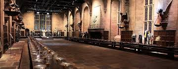
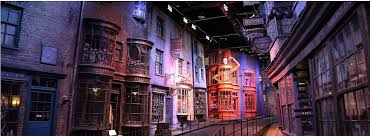

해리포터 스튜디오 구성
- 해리포터 스튜디오는 계절마다 테마가 바뀝니다.
그중에서 매번 볼 수 있는 테마는 다음과 같습니다.
|  |
 |
 |
화려한 대공연장에는 각 기숙사에서 온 학생들의 의상과 저녁 식사를 위해 차려진 두 개의 큰 테이블이 포함되어 있다
맨 위에는 호그와트 교수들이 앉았던 교사용 테이블이 있다. |
ddd |
ddd |
해리포터 스튜디어 운영 시간
해리포터 스튜디오 위치
- 해리포터 위치는 밑에 있는 지도를 통해 확인하실 수 있습니다.
대중교통 이용 시 지하철과 버스를 환승해야 해서 왕복셔틀이나 기차를 이용하는걸 추천드립니다.
해리포터 스튜디오 오는 법
- 1. 런던 유스턴(London Euston)역에서 왓포드 정션(Watford Junction) 행 기차 타기
기차를 타고 20분정도 이동하면 해리포터 스튜디오에 도착합니다.
기차 요금은 오이스터 카드로 낼 수 있으니 따로 기차표를 끊지 않으셔도 됩니다.
따로 개찰구는 없어서 주변에 있는 기계를 찾아 카드를 태그하세요.
등 앱을 이용하면 보다 저렴하게 이용할 수 있어요.
2. 왓포드 정션 역 바로 앞에서 스튜디오행 셔틀버스 타기
버스 요금은 왕복 £2.5입니다.
처음 탑승할 때 주는 영수증 티켓을 꼭 가지고 있으셔야 합니다.
돌아올 때 기사님께 보여드려야 하니깐요.
셔틀버스 타고 스튜디오까지는 15분입니다.
3. 런던 시내에서 스튜디오까지 바로 가는 왕복 교통편을 판매하고 있어요.
골든 투어 기준으로 교통편만 £40(한화 약 59,000원)입니다.
해리포터 스튜디오 티켓 예매
워너 브라더스 스튜디오 투어를 통해 예매 가능합니다.
원하는 날짜와 시간대 티켓이 없을 가능성이 크서 최소한 두 달 전에는 예매해주셔야 합니다.